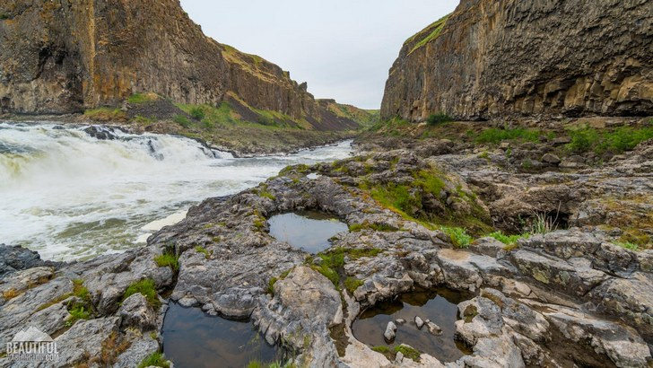
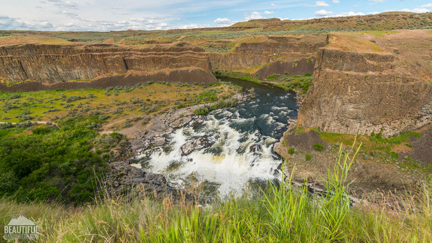

СКАЗОЧНЫЙ ГОСУДАРСТВЕННЫЙ ПАРК PALOUSE FALLS
АВТОР: RUSAMER, КАТЕГОРИЯ: КРАСИВЫЕ МЕСТА АМЕРИКИ

Река Палус протекает в юго-восточной части штата Вашингтон. Ее воды достигают каньона, создавая завораживающее зрелище под названием «Водопад Палус». Он расположен в красивейшем государственном парке Palouse Falls, площадь озера Мизула составляет 42 гектара, а границы пролегают в части округа Франклин и округа Уитмен. Это по своей сути уникальный парк с богатой историей и удивительной геологией. Конечно же, парк славится водопадом Палус (Palouse Falls) во всем мире, который является не только одним из самых живописных водопадов штата Вашингтон, но и одним из его символов. Река Палус (Palouse River) падает каскадами водопадов с высоты 57-метрового утеса и собирается в небольшое круглое озеро, окруженное отвесными скалами, а дальше продолжает свой путь вдоль изумительно красивого небольшого речного каньона. С геологической точки зрения этому каньону не более 10-ти тысяч лет. Во время ледниковой эпохи ни каньона, ни водопада и даже реки еще не существовало. Каньон был вырезан могучими водами гигантского озера Мизула во время ледникового периода, которое немного изменило направление самой реки Палус.
Государственный парк был создан 3 июня 1951 года. Сегодня это замечательное место приглашает тысячи туристов увидеть это великолепное чудо природы. Любой водопад сам по себе неотразимый, но в мире существуют такие творения природы, которыми вы можете восхищаться часами ... Водопад Палус – это одно из них. Он невероятно красивый и величественный! Летом, над потоками реки сияет радуга, а зимой этот могущественный водопад замерзает, но все равно остается живописным. Если вы хотите увидеть Palouse Falls во всей его красоте, мы рекомендуем посетить этот парк в середине или конце весны.
Государственный Парк Palouse Falls оборудован следующими удобствами:
- Пешеходные тропы ( одна из которых для людей с ограниченными возможностями).
- Кемпинг (предлагает 11 кемпингов (один из них для людей с ограниченными возможностями). В каждом кемпинге есть стол для пикника, камин, питьевая вода. Можно разместить две палатки (до четырех человек).
- Зона для пикника (одна беседка для пикника с мангалом, пятнадцать столиков для пикника. Сама пикник-зона занимает почти 1 гектар).
Следует также отметить, что объекты дневного пользования, а также места для кемпинга предоставляются в порядке очередности. Что также важно знать для посетителей этого парка, так это то, что в нем нет киоска для оплаты кредитной картой, поэтому можно только расплатиться наличными или выписать чек.
Проведите незабываемое время в этом удивительном месте и насладитесь завораживающими видами на чудесный водопад, реку, скалы и многое другое. Познайте безграничную красоту природы и изведайте каждый уголок этого многогранного мира.